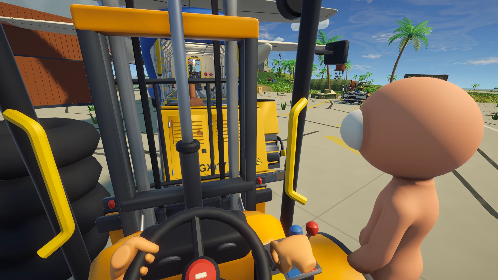
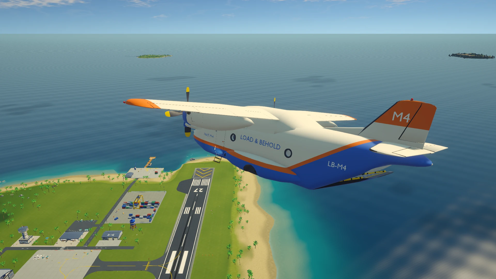
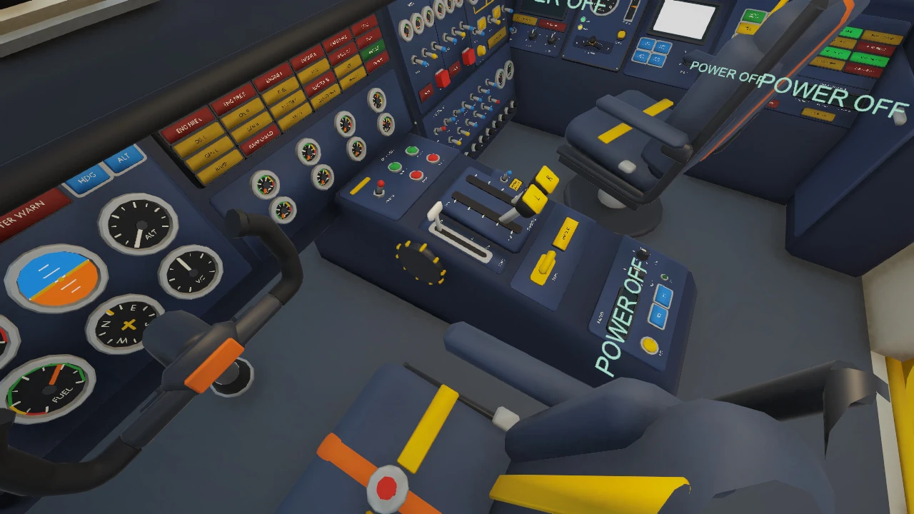
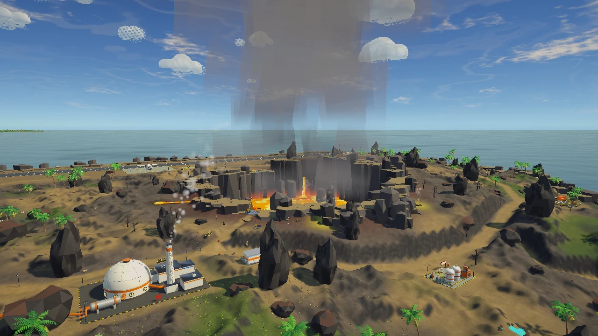

01Load it. Lock it down.
Move crates by hand, winch heavy cargo aboard and use forklifts on the ground. Secure the load: a shifting cargo hold changes how the aircraft handles.
Independent developer · OneginDev
Games to get lost in. Digital projects to explore. Built with curiosity, one idea at a time.
Discover my work ↓
Your crew. Your cargo. Your problem.
A cooperative first-person cargo adventure. Load up the Mule-M4, take to the skies and try to bring everything home in one piece.
The experience

01Move crates by hand, winch heavy cargo aboard and use forklifts on the ground. Secure the load: a shifting cargo hold changes how the aircraft handles.

02Fly the Mule-M4, manage its systems and head back into the cargo hold. Separate engine controls, weather radar and hands-on repairs give everyone a job.

03Blizzards, thunderstorms, engine failures and a volcanic eruption. Land the delivery or drop it by parachute, then take on daily jobs between story flights.
Skyhook → Mackerel
Deliver festival equipment and an enormous inflatable fish. When it starts expanding inside the hold, someone has to reach the valve.
Deadwing → Crater
Retrieve a GX-17 generator from the scrapyard and fly it to the volcanic station. Keep the vibrating load secured and the aircraft balanced.
Mackerel → Ice Island
Bring medicine to the polar station. Power the thermal container from the aircraft and find the runway in a blizzard.
Crater → Mackerel
Evacuate a volcanologist during an eruption. Save the research cases if time allows, then get the engines through the ash.
Deadwing → Stormbreak
Charge a transmitter onboard and get it to the radio tower. Unload after landing or make a cargo parachute drop.
Ice Island → Mackerel
Carry four emergency batteries to a village without power. After a lightning strike, decide whether to sacrifice part of the load.
Inside Load & Behold
Select a frame to explore
Selected work / 02—05
A few more ideas I brought to life. Different worlds, the same curiosity.
A small world inside Telegram.
A Telegram mini app built around gift cases using Stars, with a profile, promo codes, gift upgrades, mini-games and hidden Easter eggs.
@OneginCaseBotUse the mini app button next to the message field, or open the bot profile and select “Open App”. The /start command is unavailable while the bot servers are offline; the mini app remains available.
A little closer to the universe.
Watch Earth live from orbit, follow the launch calendar and track the ISS, including its passes over cities. On the anonymous Drift Wall, messages disappear every 24 hours.
Explore the screensLess scrolling. More growing.
Turn time away from your phone into a growing companion. Focus sessions help your pet flourish, while optional app-activity tracking creates personal quests and challenges.
Find it on RuStoreA smart habit tracker for a more balanced day.
Set up habits with a schedule, daily goals and reminders, or start with a ready-made plan for sleep or fitness. An in-app coach offers prepared suggestions for busy days and missed habits. Statistics show what you completed, what you skipped and why.
Find it on RuStore6 SCREENS / SELECT TO VIEW
The person behind the projects
I’m OneginDev, a solo developer from Russia. I make games, apps and web experiences. My main focus is Load & Behold: bringing cargo handling, flying and teamwork together in one adventure.
Have something in mind?
For publishing, collaboration or a conversation about my projects.